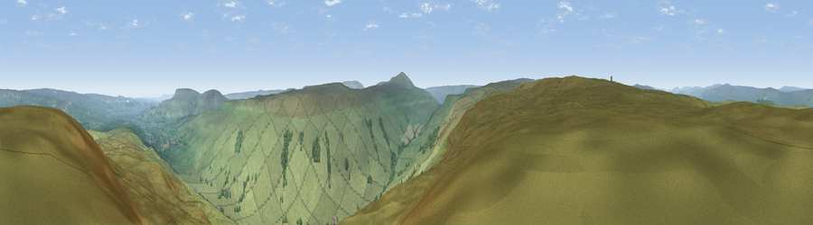

Viewpoint near Aysgarth
#9044 in England · top 16% of its area beats it · near Aysgarth · open accessWhere it is
The exact computed spot (SD 95875 84875). Click the marker for map links.
Public access: this spot lies on mapped open-access land (CRoW Act 2000) — you may roam here on foot. Computed from Natural England's CRoW access layer and OpenStreetMap rights of way — not the legal definitive map. Always verify locally.
The view, rendered

A 360° render of this exact spot computed from the terrain model, tree cover and land cover — summer colours, afternoon light, calibrated against photographs of famous viewpoints. Real trees, hedges and buildings will differ in detail.
The panorama
Grey silhouette: terrain skyline in each direction (720 bearings, Earth curvature and refraction included). Dashed green: skyline with trees (+15 m) and buildings (+8 m) as obstacles. Blue strip: how far the ground is visible on each bearing.
Where the view opens
Wedge length = distance to the farthest visible ground on that bearing (vegetation-aware). Rings at 10, 25 and 50 km.
What fills the view
96% grassland · 4% woodland
Angular shares of the visible panorama (visual magnitude), not map area. Landscape diversity 0.08 (0–1 Shannon).
Key numbers
More beautiful places nearby
The staircase of upgrades: each row has a higher view potential than everything closer. Driving times are estimates from straight-line distance, calibrated against real road routing — check an actual route before setting out.
| Place | Direction | Drive | Score |
|---|---|---|---|
| Naughtberry Hill | SSE · 4 km | ~8 min | 69.7 |
| Viewpoint near Buckden | S · 6 km | ~13 min | 77.3 |
| Viewpoint near East Witton | E · 18 km | ~31 min | 77.8 |
| Whernside | W · 22 km | ~37 min | 79.9 |
| Warton Crag | WSW · 48 km | ~69 min | 83.2 |
| Beacon Hill | ENE · 52 km | ~74 min | 84.7 |
| Viewpoint near Finsthwaite | W · 57 km | ~79 min | 90.3 |
| The Knoll | S · 399 km | ~382 min | 91.0 |
54.25953, -2.06482 · source: screening · position refined by local search. Computed location — check access rights before visiting.